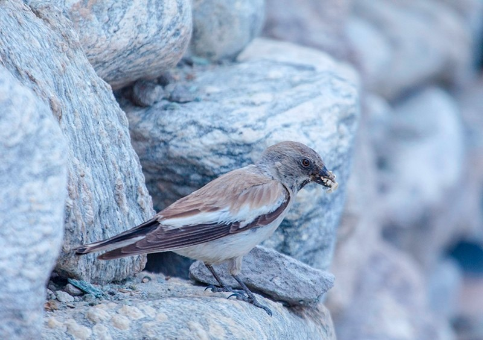
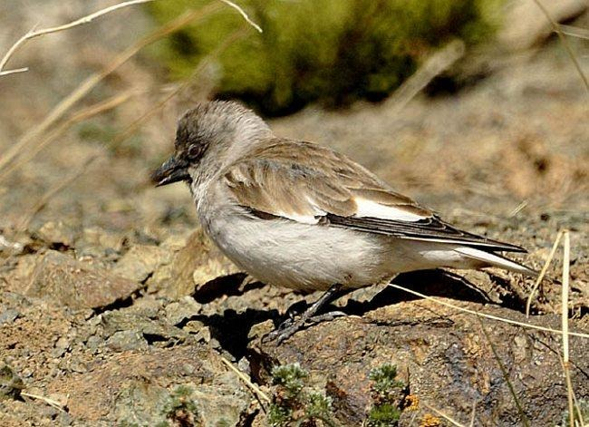
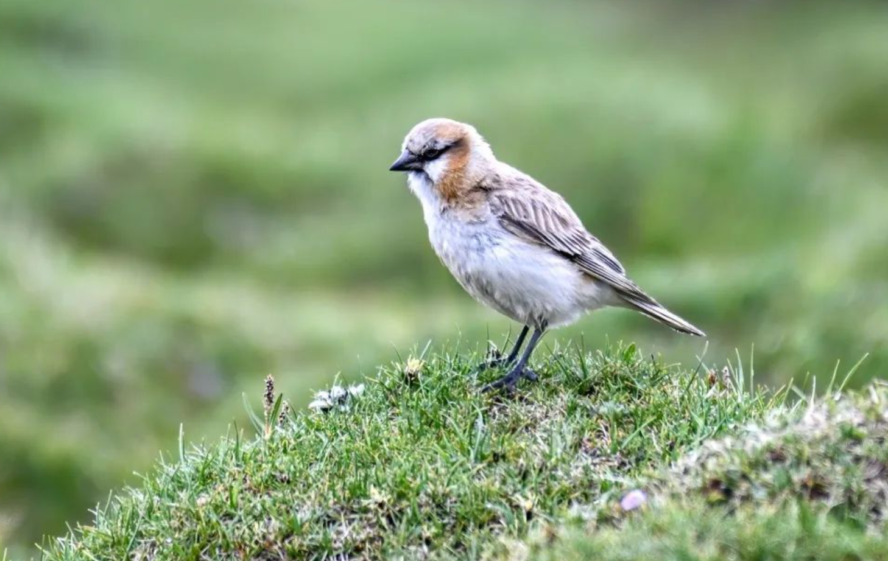
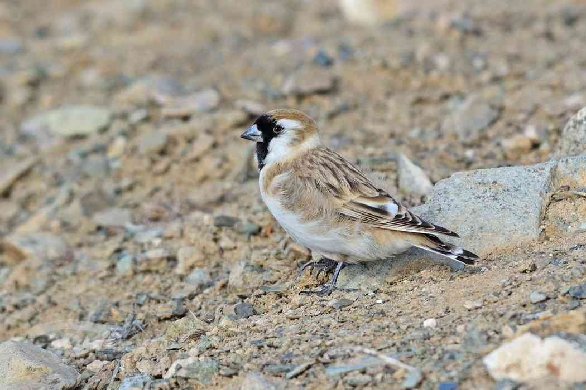
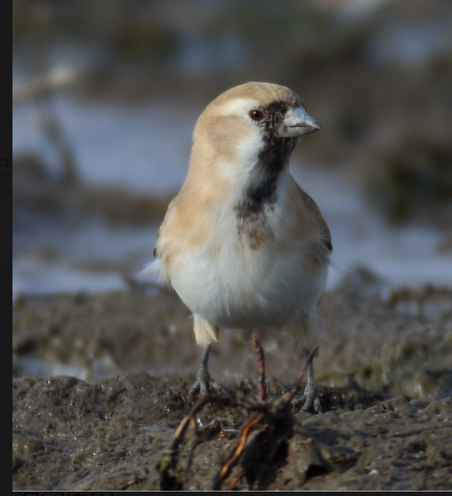

羽翼守望者


雪雀属（Montifringilla）隶属于雀科，全球约8种，主要分布于中亚及青藏高原的高山裸岩、流石滩和草原。体长约15-20cm，羽毛以灰褐为主，翅膀具白色斑纹，飞行时可见。它们耐寒耐旱，以植物种子、昆虫为食，常在地面活动，善于奔跑。
繁殖期营巢于岩石缝隙或鼠兔废弃洞穴中，每窝产3-6枚卵。冬季集群活动，常与雪鸡等混群。由于高原气候变化，部分种类分布区收缩。
📖 参考：点此处 查看国际鸟盟资料。

白斑翅雪雀体长约16-18cm，上体灰褐色，翼具大块白斑，尾羽基部白色。分布于欧洲南部至中亚高山，中国西部有分布。
栖于海拔2000-4500m的草甸和裸岩，以植物种子和昆虫为食。繁殖期5-7月，筑巢于岩石缝中，每窝产4-5枚卵。因分布广泛，种群稳定。

棕颈雪雀体长约17-19cm，颈侧和喉部棕褐色，上体灰褐，翼带白斑。分布于中亚及我国西北高山草原。
常集群活动，以草籽、浆果为食。繁殖期筑巢于地面或鼠洞中，每窝产3-5枚卵。因草原退化，局部种群减少。

黑喉雪雀为中国特有种，体长约18-20cm，喉部黑色，上体灰褐，翼具白斑。分布于青藏高原东部及四川西部。
栖于高山草甸，以昆虫和植物种子为食。繁殖期5-6月，营巢于地下洞穴。因栖息地有限，需关注其保护状况。
📖 参考：点此处 查看 IUCN 评估。

雪雀属对高山草原生态有积极意义，保护草场、减少过度放牧是保护关键。公众可通过参与高原生态旅游、支持环保组织来帮助它们。
📖 了解更多：点此处 查看中国林草局。